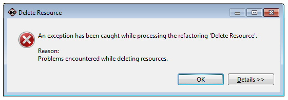
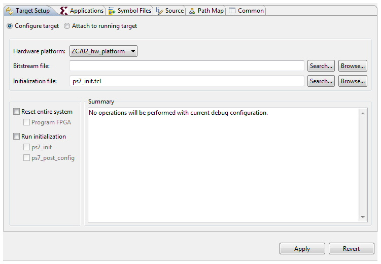
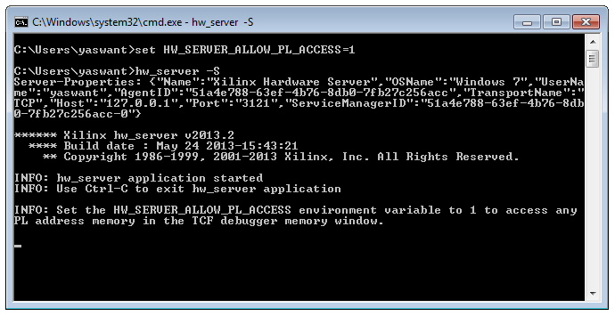
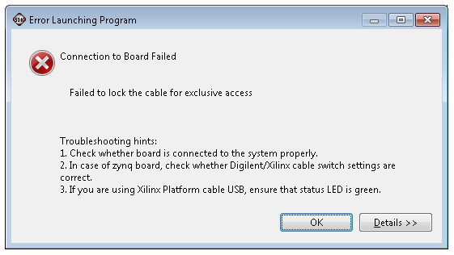

System Debugger Limitations, Known Issues, and FAQs
Known Issues and Limitations
In which scenario should I use Xilinx® System Debugger or Xilinx C/C++ Debugger (XMD+GDB)?
It is preferable to use the Xilinx C++ application, System Debugger. Use Xilinx C/C++ Debugger (GDB) when you want to debug Linux applications.
Changing the cable type in the Configure JTAG Settings dialog box results in a prompt to terminate any active XMD-GDB debug sessions.
Because XMD supports one cable type at a time, it is required to terminate any active GDB launches.
Global variables are not displayed with Xilinx C/C++ application (System Debugger).
Hover the mouse on the global variable to see the value of the global variable.
There is no support for Linux Application debug from the Xilinx C/C++ application (System Debugger).
Use the Remote ARM Linux Application configuration to debug Linux Applications.
Deleting the last debugged application immediately (using Xilinx C/C++ application (System Debugger) by choosing the “Delete Project contents on disk” option, causes the exception below:

The workaround for this issue is to wait for four seconds after debugging, then try deleting the application.
Cannot perform standalone profiling with Xilinx C/C++ application (System Debugger).
Use Xilinx C/C++ Debugger (GDB) debugger to profile the Standalone applications.
By default, the Xilinx System Debugger starts at Application entry (main()). How can I tell Xilinx System debugger to start at program entry?
If you wish to start debugging from program entry, enable the Stop at program entry checkbox in the debug configuration, as shown below..

Debug after re-launch does not stop on breakpoints.
SDK does a processor reset on every debug session. The interrupt controller is not reset during processor reset. Change the reset type to System Reset in Target Setup tab of debug configuration, as shown below.

Note: This is applicable only if you terminate a debug session while the processor is in interrupt context.
Not able to view the ps7 peripheral registers in System Debugger.
By default these registers are not shown. Set an environment variable HW_SERVER_ALLOW_PL_ACCESS in the command prompt, then launch hw_server, as shown below.
- Close any instance of hw_server that is running
- Launch a terminal/command prompt from SDK by clicking the Terminal/Command button:

“Build Project” & “Clean Project” context menu options are missing for new BSP projects.
BSP projects use “Makebuilder” to build BSP applications. When the Project > Build Automatically option is set, both the “Build Project” and “Clean Project” context menu options are invisible, but any changes made to the BSP project triggers auto build. If you wish to see “Build Project” and “Clean Project” for a BSP project, disable the Project > Build Automatically option.
Xilinx C/C++ Debugger (GDB) debugger hangs when the Disassembly view is open.
The workaround is to close the Disassembly view and proceed with debugging.
I am getting the error below while debugging an application.

The workaround for this issue is to restart the board. This issue will be resolved in the next release.
Resuming from breakpoint did not work while debugging on MicroBlaze™ with System Debugger. Stepping over/into the breakpoint works fine.
This issue occurs in some scenarios. It will be fixed in the next release.
Stepping over a watchpoint variable is not working while debugging on Microblaze with System Debugger. But resume works fine.
This issue occurs in some scenarios. It will be fixed in the next release.
Not able to perform single step in area optimized MicroBlaze DDR design using Xilinx C/C++ application, System Debugger.
The workaround is to use Xilinx C/C++ Debugger (GDB). This issue will be fixed in next release.
Not able to debug the MicroBlaze startup code using the Xilinx C/C++ application, System Debugger .
This issue shows up with some designs and will be fixed in the next release.
Frequently Asked Questions
Changing cable type in “Configure JTAG Settings” dialog box is prompting to terminate any active XMD-GDB debug sessions.
As XMD supports one cable type at a time, it is required to terminate any active launches.
Global variables are not displayed with Xilinx-customized System Debugger.
Hover the mouse on the global variable to see the value of the global variable or use Xilinx Standard debugger (XMD) to see the global variables values.
No support for Linux Application debug from Xilinx-customized debugger.
Use Remote ARM Linux Application configuration to debug Linux Applications.
Cannot debug MicroBlaze applications using Xilinx-customized System Debugger.
Use Xilinx Standard debugger to debug the MicroBlaze applications.
Cannot perform standalone profiling with Xilinx-customized System Debugger.
Use Xilinx Standard debugger to profile the Standalone applications.
Compilation happens properly but screen shows red marks indicating as if it failed due to errors.
CDT static code analysis is run on your source code by default. Some of the code analysis issues are reported as errors by default. You can switch Code Analysis Severity to Info from Error by going to Window > Preferences > C/C++ > Code Analysis.
Cannot perform standalone profiling with Xilinx-customized System Debugger.
Use Xilinx Standard debugger to profile the Standalone applications.
Why is it that I cannot set more than 5 breakpoints/watchpoints with the System Debugger?
Internally a breakpoint/watchpoint planted by user is treated as Hardware breakpoints in System Debugger. For ARM there is a limitation of 6 Hardware breakpoints. Out of 6, one breakpoint is used for the single stepping, other breakpoint is used for stopping at main(). So users are left with four breakpoints. Software breakpoints (No limitation on number of breakpoints) support will be added in next release.
Cannot perform standalone profiling with Xilinx-customized System Debugger.
Use Xilinx Standard debugger to profile the Standalone applications.
Debug after re-launch does not stop on breakpoints.
SDK does processor reset on every debug session. The Interrupt Controller is not reset during Processor reset. Change the reset type to System Reset in the Device Initialization tab of debug configuration.
Not able to view the ps7 peripheral registers in System Debugger.
By default these registers are not shown. Set an environment variable, HW_SERVER_ALLOW_PL_ACCESS, in the command prompt, then launch the hw_server.
FPGA need to program again after System Reset.
This is a change introduced with the latest silicon versions. If you are debugging PS+PL design and have the Reset Entire System option in the debug configuration, perform program FPGA when the debugger stops at application main().
Build Project and Clean Project context menu options are missing for new BSP projects.
BSP projects uses Makebuilder to build BSP applications. When the Project > Build Automatically option is set, both Build Project and Clean Project are not visible, but any changes made to the BSP project triggers an auto-build. To see these context menu options for a BSP project, unset the Project > Build Automatically option.